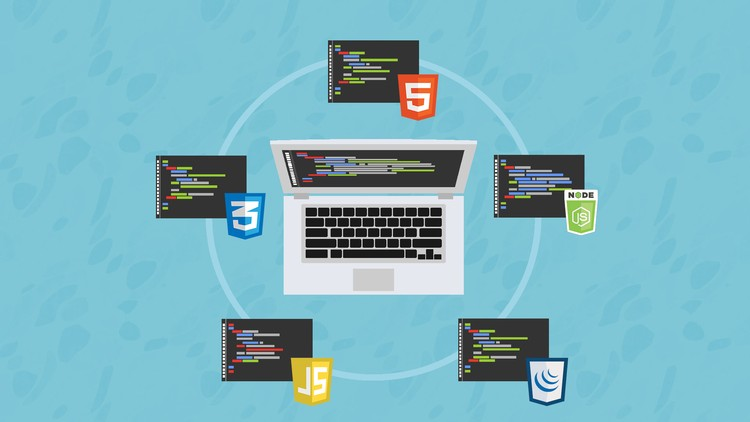
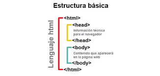
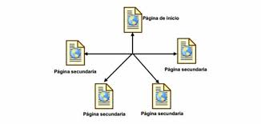

Universidad Nacional Abierta y a Distancia
Diseño de Sitios web
logica de programacion
¿Para que sirve la logica de programacion?
La lógica de programación es la habilidad de pensar, de una forma ordenada, sistemática y razonable, la cual nos sirve para dar solución a problemas ya sea de programación, laborales y a interpretar algoritmos.
Esta disciplina proporciona técnicas, reglas para determinar cuando un razonamiento es valido y cuando no, para verificar si los programas son correctos, demostrar teoremas matemáticos y entre otros, los cuales son de gran importancia en la vida cotidiana del ser humano.
El desarrollo de la programación orientada a objetos, nos permite dar solución a diversas tareas, a través de recursos y aplicaciones de gran tendencia, con el diseño, codificación y depuración, manteniendo el código fuente del mismo.
Lenguajes de Programación (POO)
Se llaman programas orientados a objetos, aquellos que implementan conceptos definidos, como esta la programación de interfaces graficas del usuario.
A continuación se encuentran algunos lenguajes de programación:
• ADA
• C++
• Objective C
• Java
• Smalltalk
• Eiffel
• Ruby
• Pythonlll
• SDK
• OCAML
• Object Pascal
• CLIPS
• Actionscript
• Pauscal [En español]
• Perl
• PHP
• C#
• Kotlin
• Visual Basic.NET
• Simula
• Delphi
• PowerBuilder
• Maya
• Visual Fox Pro V9
_____________________________________________________________
¿Que es la logica de programacion?
La logica de programacion es la habilidad de pensar, de una forma ordenada, sistematica y razonable, la cual nos sirve para dar solucion a problemas ya sea de programacion, laborales y a interpretar algoritmos.

Esta disciplina proporciona tecnicas, reglas para determinar cuando un razonamiento es valido y cuando no, para verificar si los programas son correctos, demostrar teoremas matematicos y entre otros, los cuales son de gran importancia en la vida cotidiana del ser humano.
El desarrollo de la programacion orientada a objetos, nos permite dar solucion a diversas tareas, a traves de recursos y aplicaciones de gran tendencia, con el diseño, codificacion y depuracion, manteniendo el codigo fuente del mismo.
Lenguajes de Programacion (POO)
Se llaman programas orientados a objetos, aquellos que implementan conceptos definidos, como esta la programacion de interfaces graficas del usuario.
Programacion orientada a objetos (POO)
Programacion orientada a objetos (POO). Es un paradigma de programacion que usa objetos y sus interacciones, para diseñar aplicaciones y programas informaticos. Esta basado en varias tecnicas, incluyendo herencia, abstracción, polimorfismo y encapsulamiento.En la actualidad, existe variedad de lenguajes de programacion que soportan la orientación a objetos.

La POO difiere de la programacion estructurada tradicional, en la que los datos y los procedimientos están separados y sin relacion, ya que lo único que se busca es el procesamiento de unos datos de entrada para obtener otros de salida. La programacion estructurada anima al programador a pensar sobre todo en terminos de procedimientos o funciones, y en segundo lugar en las estructuras de datos que esos procedimientos manejan. En la programacion estructurada solo se escriben funciones que procesan datos. Los programadores que emplean POO, en cambio, primero definen objetos para luego enviarles mensajes solicitandoles que realicen sus metodos por sí mismos.
La logica de programacion es muy importante en la vida cotidiana, ya que nos permite dar solucion a contantes problemas que se nos presentan.

Abstraccion
Denota las caracteristicas esenciales de un objeto, donde se capturan sus comportamientos.Cada objeto en el sistema sirve como modelo de un "agente" abstracto que puede realizar trabajo, informar y cambiar su estado, y "comunicarse" con otros objetos en el sistema sin revelar como se implementan estas caracteristicas. Los procesos, las funciones o los metodos pueden tambien ser abstraidos y cuando lo estan, una variedad de tecnicas son requeridas para ampliar una abstraccion.El proceso de abstraccion permite seleccionar las caracteristicas relevantes dentro de un conjunto e identificar comportamientos comunes para definir nuevos tipos de entidades en el mundo real.
Encapsulamiento
Significa reunir a todos los elementos que pueden considerarse pertenecientes a una misma entidad, al mismo nivel de abstraccion. Esto permite aumentar la cohesion de los componentes del sistema. Algunos autores confunden este concepto con el principio de ocultacion, principalmente porque se suelen emplear conjuntamente.
_______________________________________________________________